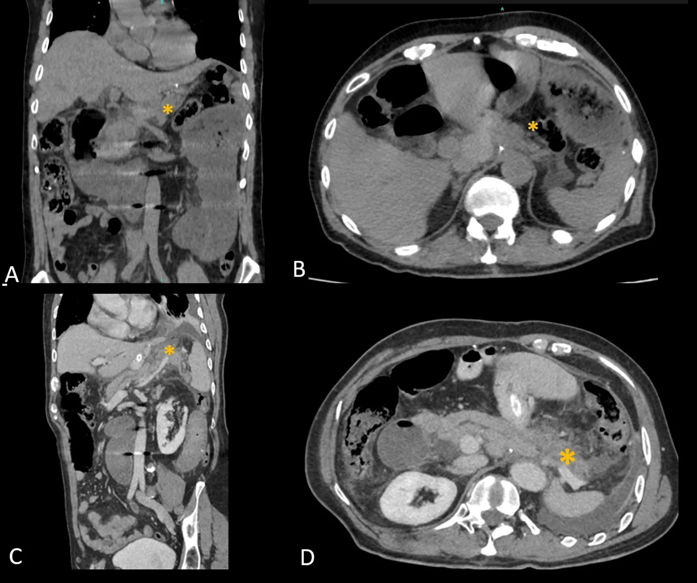
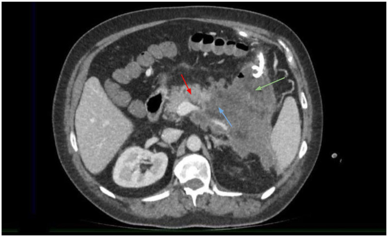

Острый панкреатит
Определение и общие сведения об остром панкреатите
Поджелудочная железа ежесуточно вырабатывает 1000—1500 мл панкреатического сока.[Кузин, с. 405]
Острый панкреатит — воспалительно-дегенеративное заболевание поджелудочной железы, возникающее вследствие аутоагрессии: патологической агрессии органа против собственных тканей. В норме пищеварительные ферменты синтезируются в форме неактивных проферментов. При их преждевременной активации внутри железы они начинают переваривать её паренхиму. Паренхима поджелудочной железы — это совокупность рабочих клеток органа, объединённых в дольки, обеспечивающая выработку ферментов и синтез инсулина. Расплавление этих клеток собственными ферментами называется аутолизом. Протеолитические ферменты расщепляют белки; ключевые из них — трипсин, химотрипсин и эластаза.
В 90 % случаев аутолиз незначителен: развивается отёчная форма панкреатита с летальностью в доли процента. В остальных случаях возникает панкреонекроз — гибель ткани поджелудочной железы (жировой, геморрагический или смешанный). При панкреонекрозе летальность достигает 20—40 % и более, а применение малоинвазивных технологий позволяет снизить её до 10 % и ниже.[Кузин, с. 420]
Среди неотложных хирургических заболеваний органов брюшной полости острый панкреатит занимает 3-е место после острого аппендицита и острого холецистита. Болеют преимущественно люди в возрасте от 30 до 60 лет; женщины страдают в 2 раза чаще мужчин. Желчнокаменная болезнь и злоупотребление алкоголем составляют 90 % всех случаев.[Кузин, с. 408]
Ключевой вывод, который определяет всю последующую логику раздела: тяжесть острого панкреатита прямо пропорциональна глубине и распространённости аутолиза паренхимы.
Этиология острого панкреатита
Билиарный и алкогольный панкреатит вместе составляют 90 % всех случаев.[Кузин, с. 409] Панкреатический сок поступает в двенадцатиперстную кишку через большой дуоденальный сосочек (БДС), где общий желчный и главный панкреатический протоки открываются в единую ампулу. Отток регулируется сфинктером Одди. Общий канал (ампула) у лиц, болевших панкреатитом, имеется почти в 90 % случаев, а у больных желчнокаменной болезнью без панкреатита — лишь в 20—30 %. При перекрытии клапана нарастает внутрипротоковое давление и возникает рефлюкс желчи, повреждающий эпителий и активирующий ферменты. Панкреатит на фоне патологии желчевыводящих путей называют билиарным панкреатитом.[Кузин, с. 377, 409]
| Этиологический фактор | Частота | Основной механизм триггера |
|---|---|---|
| Билиарный (желчнокаменная болезнь, холедохолитиаз, стриктура БДС) | самая частая | Блокада ампулы БДС, рефлюкс желчи, внутрипротоковая гипертензия |
| Алкогольный | вторая по частоте | Гиперсекреция, повышение давления в протоках, преципитация белковых пробок |
| Травматический (тупая травма живота, интраоперационное повреждение) | редко | Прямое повреждение паренхимы и протоков, нарушение оттока |
| Лекарственный (тетрациклин, вальпроевая кислота, азатиоприн, кортикостероиды) | редко | Токсическое действие на ацинарные клетки, нарушение микроциркуляции |
| Прочие (атеросклеротическая окклюзия висцеральных сосудов, гиперпаратиреоз, паразиты, дивертикул около БДС) | единичные случаи | Ишемия, гиперкальциемия, механическое сдавление протоков |
| Идиопатический | редко | Причина не установлена |
Алкоголь стимулирует выработку соляной кислоты и секретина, вызывая экзокринную гиперсекрецию и формирование белковых пробок в протоках.[Кузин, с. 409] Обильный приём жирной пищи дополнительно стимулирует секрецию и провоцирует приступ.
Травматический панкреатит возникает при сдавлении железы между эпигастрием и позвоночником или при интраоперационном повреждении. Послеоперационная летальность при размозжении головки с разрывом главного панкреатического протока достигает 60—80 %.[Кузин, с. 422]
Лекарственный панкреатит вызывают тетрациклины (прямое токсическое действие), кортикостероиды (повышение вязкости секрета), азатиоприн и вальпроевая кислота (нарушение микроциркуляции).
Примерно у 10 % пациентов диагноз остается идиопатическим (причина не найдена доступными методами), что часто обусловлено микролитиазом.
Ключевой итог раздела: при всём разнообразии причин острого панкреатита большинство из них сводится к единому конечному механизму — нарушению оттока панкреатического секрета и нарастанию внутрипротокового давления.[Кузин, с. 409]
Патогенез острого панкреатита: ферментный каскад и системный ответ
При росте внутрипротокового давления липаза проникает в ацинарные клетки и гидролизует триглицериды с образованием жирных кислот.[Кузин, с. 406] Развивается внутриклеточный ацидоз (pH 3,5—4,5), стимулирующий превращение трипсиногена в активный трипсин.[Кузин, с. 409]
Трипсин активирует фосфолипазу А (разрушает мембраны клеток, вызывая жировой некроз и «стеариновые пятна»), эластазу (разрушает сосудистые стенки, вызывая геморрагический некроз) и коллагеназу (разрушает соединительнотканную строму).[Кузин, с. 409] Связывание кальция жирными кислотами снижает его уровень в крови ниже 2 ммоль/л (при норме 2,10—2,65 ммоль/л, или 8,4—10,6 мг/дл).[Кузин, с. 413]
Направления распространения экссудата определяют топографические типы панкреонекроза: поражение головки распространяется вправо (в правый боковой канал, правое поддиафрагмальное пространство и корень брыжейки тонкой кишки); хвоста — влево (в левое забрюшинное пространство и левый боковой канал); тела — в сальниковую сумку и брыжейку поперечной ободочной кишки; тотальное поражение захватывает несколько пространств одновременно.
Местная воспалительная реакция перерастает в ССВО — синдром системного воспалительного ответа (Systemic Inflammatory Response Syndrome). ИЛ-1 вызывает лихорадку, а высокие концентрации ИЛ-6 и ИЛ-8 в крови коррелируют с развитием полиорганной недостаточности.[Кузин, с. 410] Интоксикация и гиповолемия приводят к шоку, ДВС-синдрому и полиорганной недостаточности.
Именно этот переход от локального ферментного каскада к системному воспалительному ответу определяет тяжесть и прогноз заболевания.[Кузин, с. 410]
Классификация острого панкреатита (Атланта 1992)
В 1992 году на международном симпозиуме в Атланте принята «Классификация Атланты 1992» — единый стандарт описания болезни. Классификация строится по трём независимым осям (морфология, распространённость некроза, клиническое течение), а тяжёлые формы делятся по фазам.[Кузин, с. 410]
| Ось | Варианты | Суть |
|---|---|---|
| По морфологии (тяжести) | Отёчная форма | Микроскопические очаги некроза, железа увеличена, аутолиз минимален |
| Жировой панкреонекроз | Макроскопический некроз жировой ткани; железа пёстрая, лейкоцитарная инфильтрация | |
| Геморрагический панкреонекроз | Жировой некроз с кровоизлияниями, геморрагический выпот, обширный отёк клетчатки | |
| По распространённости | Очаговый панкреонекроз | Поражены отдельные участки паренхимы |
| Субтотальный панкреонекроз | Некроз охватывает большую часть железы | |
| Тотальный панкреонекроз | Вся паренхима вовлечена в некроз | |
| По клиническому течению | Абортивное | Процесс останавливается на стадии отёка или небольшого некроза |
| Прогрессирующее | Аутолиз нарастает до жирового и геморрагического некроза | |
| Фазы тяжёлого панкреатита | I. Гемодинамических нарушений | Интоксикация + гиповолемия → панкреатогенный шок, ДВС-синдром |
| II. Органной дисфункции | Недостаточность внутренних органов на фоне ССВО | |
| III. Гнойных осложнений (через 10—15 сут) | Инфицирование некрозов, абсцессы, флегмона, перитонеальный сепсис | |
| IV. Секвестрации | Отграничение и расплавление некрозов, формирование ложных кист |
Морфологические формы:
Отёчная форма: повреждение клеток микроскопическое, железа набухает, макроскопических очагов некроза нет. Около 90 % случаев заканчиваются на этой стадии, летальность — доли процента. Фаза отёка может за 1—2 дня перейти в некроз.[Кузин, с. 411]
Жировой панкреонекроз: макроскопическое омертвение жировой ткани железы и клетчатки (железа пёстрая на разрезе, лейкоцитарная инфильтрация, асептическое воспаление). Высвобождаемые липазой жировые кислоты связывают кальций крови, его уровень падает ниже 2 ммоль/л при норме 2,10—2,65 ммоль/л (или 8,4—10,6 мг/дл) — прогностически неблагоприятный признак.[Кузин, с. 411]
Геморрагический панкреонекроз: жировой некроз с кровоизлияниями, геморрагический выпот в брюшной полости и отёк забрюшинной клетчатки (панкреатогенный асептический перитонит). Развивается панкреатогенный шок — острая недостаточность кровообращения вследствие ферментативной интоксикации и гиповолемии (секвестрация жидкости). Встречаются смешанные формы.[Кузин, с. 410]
По распространённости выделяют очаговый, субтотальный и тотальный панкреонекроз (поражение всей паренхимы резко ухудшает прогноз).
По клиническому течению различают абортивное (самоограничивается на отёчной стадии) и прогрессирующее течение.[Кузин, с. 411]
Фазы тяжёлого прогрессирующего панкреатита: I — гемодинамических нарушений (панкреатогенный шок, ДВС-синдром); II — органной дисфункции (недостаточность лёгких, почек, печени на фоне ССВО); III — гнойных осложнений (наступает через 10—15 дней: транслокация бактерий, абсцессы, флегмона забрюшинной клетчатки, сепсис; у погибших позже 7-го дня в 77 % преобладают гнойные осложнения); IV — секвестрация (отграничение и расплавление омертвевших участков, формирование ложных кист).[Кузин, с. 412]
Три оси независимы: сочетание морфологической формы, объёма поражения и фазы определяет тактику лечения и прогноз.
Клиническая картина: специфические симптомы острого панкреатита
Боль (постоянная, нарастающая), неукротимая рвота и вздутие живота образуют триаду Мондора:
1. Опоясывающая боль: начинается в эпигастрии, иррадиирует в спину и по всему животу. При алкогольном панкреатите возникает через 12—48 ч после опьянения, при билиарном — после обильной еды.[Кузин, с. 412]
2. Рвота: многократная, без облегчения, переходящая в сухие позывы с желчью.
3. Метеоризм и парез кишечника: симптом Бонде — высокий тимпанит при перкуссии живота. При скоплении экссудата возникает притупление в отлогих местах.[Кузин, с. 412]
Специфические симптомы:
Симптом Блисса — болезненность при аускультации в левом рёберно-позвоночном углу (проекция хвоста железы).[Кузин, с. 412]
Симптом Керте — поперечная болезненность и умеренная резистентность при пальпации в эпигастрии выше пупка.[Кузин, с. 412]
Симптом Воскресенского — исчезновение пульсации брюшной аорты в эпигастрии из-за перекрытия её отёчной железой.
Симптом Кача — зона кожной гиперестезии в сегментах Th8—Th10 слева.
Симптом Калька — болезненность при надавливании на 5 см выше пупка по средней линии.
Симптом Мейо-Робинсона — болезненность при пальпации в левом рёберно-позвоночном углу. При обострении хронического панкреатита положителен почти у половины больных.[Кузин, с. 422]
Симптомы Грея Тернера и Куллена — синюшные пятна на левой боковой стенке живота (Грея Тернера) или у пупка (Куллена), отражающие пропитывание клетчатки кровью. Встречаются у 1—2 % тяжелобольных при геморрагическом панкреонекрозе.[Кузин, с. 412]
Токсические ножницы — высокая частота сердечных сокращений (токсическая тахикардия) при нормальной или сниженной температуре тела (до инфицирования очагов).
| Симптом | Техника выявления | Диагностическое значение |
|---|---|---|
| Триада Мондора | Опрос: опоясывающая боль + рвота без облегчения + вздутие живота | Первый ориентир на патологию поджелудочной железы |
| Симптом Керте | Пальпация: поперечная болезненность в эпигастрии выше пупка | Отёк и воспаление тела железы |
| Симптом Воскресенского | Пальпация: отсутствие пульсации брюшной аорты в эпигастрии | Увеличенная отёкшая железа прикрывает аорту |
| Симптом Кача | Лёгкое прикосновение к коже в зоне Th8—Th10 слева | Гиперестезия кожи (висцеросенсорный рефлекс) |
| Симптом Калька | Надавливание на 5 см выше пупка по средней линии | Болезненность в проекции тела железы |
| Симптом Бонде | Перкуссия: высокий тимпанит над животом | Парез кишечника (раздражение забрюшинной клетчатки) |
| Симптом Блисса | Аускультация: болезненность в левом рёберно-позвоночном углу | Раздражение в проекции хвоста железы |
| Симптом Мейо-Робинсона | Пальпация левого рёберно-позвоночного угла | Вовлечение хвоста железы |
| Симптом Грея Тернера | Осмотр: синюшные пятна на левой боковой стенке живота | Геморрагический панкреонекроз (1—2 % тяжелобольных) |
| Симптом Куллена | Осмотр: синюшные пятна в области пупка | Геморрагический панкреонекроз |
| Токсические ножницы | Подсчёт пульса и температуры: высокая ЧСС при нормальной/низкой температуре | Токсическая тахикардия без лихорадки |
Главный вывод раздела: специфические симптомы острого панкреатита выявляются последовательно — от осмотра к пальпации, перкуссии и аускультации; ни один из них не патогномоничен в одиночку, но их совокупность вместе с токсическими ножницами позволяет поставить рабочий диагноз у постели больного ещё до лабораторного подтверждения.[Кузин, с. 422]
Лабораторная диагностика острого панкреатита
Лабораторная диагностика подтверждает диагноз и оценивает тяжесть заболевания.[Кузин, с. 407] Амилаза крови (норма 16–30 г/(ч·л) по Вольгемуту) при остром панкреатите возрастает в 5–10 раз и более из-за сброса фермента паренхимой в кровоток, однако при тотальном панкреонекрозе её уровень может снижаться до нормы. Диастаза мочи нарастает позже и держится дольше. Липаза сыворотки более специфична, так как вырабатывается почти исключительно поджелудочной железой. Определение трипсина, α-химотрипсина, эластазы и фосфолипазы А ограничено сложностью методик.[Кузин, с. 413]
| Показатель | Норма | Патологический порог / характер изменений | Клиническое значение |
|---|---|---|---|
| Амилаза крови | 16–30 г/(ч·л) | Повышение в 5–10 раз и более; снижение при тотальном некрозе | Основной скрининговый тест; снижение при некрозе не исключает тяжёлый панкреатит |
| Диастаза мочи | до 64 ед. по Вольгемуту | Значительное повышение, нарастает позже амилазы крови, держится дольше | Полезна при позднем поступлении больного |
| Липаза сыворотки | до 190 Ед/л | Повышение; более специфична, чем амилаза | Предпочтительна при подозрении на панкреатит у больных с патологией слюнных желёз |
| Трипсин сыворотки | низкий фоновый уровень | Повышение при активном аутолизе | Ранний маркёр; сложность определения ограничивает применение |
| Лейкоциты (ОАК) | 4–9 × 10⁹/л | Лейкоцитоз со сдвигом влево | Отражает ССВО; степень сдвига коррелирует с тяжестью воспаления |
| Гематокрит | 0,40–0,48 (муж.); 0,36–0,42 (жен.) | Повышение вследствие гемоконцентрации | Косвенный признак потери ОЦК и секвестрации жидкости |
| АЛТ / АСТ | до 40 Ед/л | Повышение при билиарном панкреатите или токсическом гепатите | Указывает на вовлечение печени; высокий АЛТ — довод в пользу билиарной этиологии |
| Билирубин | до 20 мкмоль/л | Повышение при обтурации общего желчного протока | Механическая желтуха — признак билиарного панкреатита или сдавления холедоха |
| СРБ (C-реактивный белок) | до 5 мг/л | Значительное повышение | Интегральный маркёр системного воспаления; динамика важнее однократного значения |
| Глюкоза крови | 3,3–5,5 ммоль/л | Гипергликемия; у ≈25 % — нарушение толерантности к глюкозе | Отражает поражение островкового аппарата; гипогликемия — редкий признак тяжёлого истощения |
| Общий белок | 65–85 г/л | Гипопротеинемия при тяжёлом течении | Следствие экссудации, голодания и катаболизма |
| Кальций крови | 2,10–2,65 ммоль/л (8,4–10,6 мг/дл) | Ниже 2 ммоль/л — прогностически неблагоприятный признак | Свидетельствует о прогрессировании жирового некроза и связывании Ca²⁺ жирными кислотами |
| Анализ мочи (ОАМ) | белок отсутствует, эритроциты единичные, цилиндры отсутствуют | Протеинурия, гематурия, цилиндрурия | Признак токсического поражения почек в рамках полиорганной недостаточности |
Лейкоцитоз со сдвигом влево отражает выраженность ССВО. Повышенный гематокрит свидетельствует о сгущении крови и падении ОЦК. Повышение АЛТ, АСТ и билирубина указывает на вовлечение печени (билиарный панкреатит с обтурацией холедоха или токсическое поражение). СРБ — динамический маркёр системного воспаления. При тяжёлом течении наблюдаются гипогликемия и гипопротеинемия.
Снижение кальция крови ниже 2 ммоль/л (при норме 2,10–2,65 ммоль/л, или 8,4–10,6 мг/дл) — прогностически неблагоприятный признак обширного жирового некроза.[Кузин, с. 413] В ОАМ протеинурия, гематурия и цилиндрурия отражают токсическое поражение почек. Нарушение толерантности к глюкозе отмечается примерно у 25 % больных, а при калькулёзном панкреатите частота недостаточности инкреторной функции железы достигает 60–80 %.[Кузин, с. 422] Ни один лабораторный тест не решает диагноз в одиночку; ценность лаборатории — в совокупности показателей и их динамике.
Инструментальная диагностика острого панкреатита
Обзорная рентгенография брюшной полости не визуализирует железу (видны лишь парез кишечника, высокое стояние левого купола диафрагмы, кальцинаты), но обязательна для исключения перфорации полого органа по наличию свободного газа.[лекция, с. 18]

Первый метод визуализации — ультразвуковое исследование (УЗИ): выявляет отёк и увеличение железы, жидкость в сальниковой сумке и парапанкреатической клетчатке, расширение холедоха и конкременты в желчном пузыре от 1–2 мм. Метод ограничен пневматизацией кишечника.[Кузин, с. 379]
КТ с контрастированием — наиболее чувствительный метод верификации панкреонекроза и его осложнений. Зоны некроза не накапливают контраст. Объём некроза определяет КТ-индекс тяжести (при высоких значениях летальность достигает 20–40 % и более). КТ выявляет скопления жидкости, абсцессы и псевдокисты. ЭКГ выполняется для исключения острого коронарного синдрома, ФГДС — для оценки слизистой желудка, ДПК и области БДС.[Кузин, с. 415]
ЭРХПГ — эндоскопическая ретроградная холангиопанкреатография показана при билиарном панкреатите с механической желтухой или неэффективности консервативной терапии в течение 24–48 часов. При вклиненном конкременте выполняют эндоскопическую папиллотомию.
В первые часы применяют УЗИ и рентгенографию. При нетяжёлом течении КТ откладывают на 48–72 часа, при нарастании тяжести — проводят немедленно.
Диагностическая лапароскопия применяется при неясном диагнозе или для исключения острой хирургической патологии; при панкреонекрозе выявляет «стеариновые пятна» на сальнике и брюшине и позволяет дренировать брюшную полость. При калькулёзном панкреатите нарушение инкреторной функции выявляют у 60–80 % больных. Малоинвазивные технологии позволяют снизить летальность при панкреонекрозе до 10 % и ниже.
Дифференциальная диагностика острого панкреатита
Острый панкреатит маскируется под заболевания группы «острый живот», каждое из которых имеет свой решающий признак, определяющий хирургическую тактику.
| Заболевание | Характер боли | Физикальные данные | Лабораторные данные | Инструментальные данные | Решающий признак |
|---|---|---|---|---|---|
| Острый панкреатит | Постоянная, опоясывающая, в эпигастрии с иррадиацией в спину | Живот мягкий или умеренно напряжён; симптом Керте, симптом Мейо-Робинсона | ↑ амилаза крови, ↑ диастаза мочи, ↑ липаза | УЗИ, КТ — увеличение и отёк ПЖ | Ферментемия + характерная УЗИ/КТ-картина |
| Прободная язва желудка и ДПК | Внезапная, «кинжальная», максимальна с первой секунды | Доскообразный живот, резкое мышечное напряжение по всей брюшной стенке | Амилаза нормальна или незначительно повышена | Rg — свободный газ под куполом диафрагмы | Свободный газ на рентгенограмме + «доска» |
| Странгуляционная кишечная непроходимость | Схваткообразная, волнообразная | Вздутие живота, усиленная перистальтика, асимметрия | Лейкоцитоз, возможен ацидоз | Rg — чаши Клойбера (горизонтальные уровни жидкости с газом над ними) | Чаши Клойбера + схваткообразный ритм боли |
| Острый холецистит | В правом подреберье, иррадиация под правую лопатку и в плечо | Симптомы Ортнера, Мерфи, Мюсси; напряжение мышц в правом верхнем квадранте | Лейкоцитоз; амилаза нормальна или умеренно повышена | УЗИ — конкременты, утолщение стенки пузыря, экссудат вокруг него | Локализация боли справа + УЗИ-картина желчного пузыря |
| Расслаивающая аневризма аорты | Раздирающая, в спину и в поясницу, не связана с едой | Разница АД на руках, пульсирующее образование в животе | Амилаза нормальна | УЗИ аорты — расслоение стенки; КТ — подтверждение | Асимметрия АД + УЗИ аорты |
| Инфаркт миокарда (абдоминальная форма) | Боль в эпигастрии, иррадиация в левое плечо и челюсть; тошнота | Живот мягкий; гипотензия, аритмия | ↑ тропонин, ↑ КФК-МВ; амилаза нормальна | ЭКГ — ишемические изменения (подъём ST, патологический Q) | ЭКГ + кардиоспецифические ферменты |
| Почечная колика | Схваткообразная, из поясницы в пах, мошонку или половые губы | Симптом Пастернацкого положительный; живот мягкий | ОАМ — гематурия, лейкоцитурия; амилаза нормальна | УЗИ почек — расширение лоханки, конкремент | Иррадиация в пах + гематурия + УЗИ почек |
Прободная язва (perforatio ulceris) — прорыв стенки желудка или двенадцатиперстной кишки. Боль начинается мгновенно и сразу достигает максимума. Физикальный признак — доскообразный живот (каменно-твёрдая передняя стенка). На обзорной рентгенограмме определяется свободный газ под куполом диафрагмы.
При странгуляционной кишечной непроходимости боль схваткообразная. На рентгенограмме выявляют чаши Клойбера — горизонтальные уровни жидкости с куполом газа над ними в раздутых петлях кишки.
При остром холецистите боль локализована в правом подреберье с иррадиацией под правую лопатку и в правое плечо, определяется напряжение мышц в правом верхнем квадранте. УЗИ выявляет конкременты, утолщение стенки желчного пузыря и экссудат вокруг него.[Кузин, с. 311]
Расслаивающая аневризма аорты проявляется раздирающей болью в спину и поясницу. Ключевые признаки: асимметрия артериального давления на руках и пульсирующее образование в животе. УЗИ аорты выявляет расслоение её стенки.
Абдоминальная форма инфаркта миокарда сопровождается болью в эпигастрии, тошнотой и рвотой. Диагноз подтверждают ЭКГ (подъём сегмента ST, патологический зубец Q) и нормальный уровень амилазы.
Почечная колика характеризуется болью в пояснице с иррадиацией в пах, мошонку или половую губу; живот остается мягким. В общем анализе мочи выявляется гематурия, на УЗИ почек — расширение лоханки и конкремент.
Минимальный диагностический набор при остром животе включает рентгенографию брюшной полости, ЭКГ, общий анализ мочи и УЗИ.
Консервативное лечение острого панкреатита
Лечение начинается с базовой триады: холод на эпигастральную область (уменьшает местный кровоток и тормозит выброс ферментов), голод на 3–7 дней (убирает стимул для секреции) и покой. Устанавливают назогастральный зонд для аспирации желудочного содержимого.
Для обезболивания вводят промедол, анальгин и спазмолитики (папаверин — снимает спазм сфинктера Одди). Применяют «тройчатку», глюкозо-новокаиновую смесь (10 мл 1 % раствора новокаина на 400 мл 5 % раствора глюкозы внутривенно капельно), перидуральную анестезию или паранефральную блокаду.[Кузин, с. 417]
Для угнетения внешней секреции применяют блокаторы Н₂-гистаминовых рецепторов (ранитидин) и ингибиторы протонной помпы (омепразол), снижающие кислотность и выброс секретина. Синтетический аналог соматостатина — октреотид (сандостатин, стиламин, октэтрид) подавляет пищеварительную секрецию.
Ферментную агрессию останавливают ингибиторы протеаз (контрикал, гордокс, овомин), блокирующие трипсин и калликреин. Они эффективны только в первой, ранней фазе заболевания. Антиферментный эффект дополняет переливание свежезамороженной плазмы.[Кузин, с. 417]
Для восполнения ОЦК вводят раствор глюкозы и раствор Рингера. При перитонеальном лаваже в течение суток вводят до 10 л раствора, содержащего хлорид натрия, лактат натрия, хлориды кальция и магния, 15 г глюкозы и до 1000 мл дистиллированной воды с осмолярностью 360 мосм/л.[Кузин, с. 419]
Антибактериальная терапия включает метронидазол в сочетании с цефотаксимом (или другим цефалоспорином III–IV поколения). При тяжёлом течении и инфицированном панкреонекрозе, когда летальность достигает 20–40 % и более, используют карбапенемы.
В комплексное лечение включают ГБО — гипербарическую оксигенацию (дыхание чистым кислородом под повышенным давлением в барокамере).
При отёчной форме, на которую приходится около 90 % всех панкреатитов, грамотная консервативная терапия приводит к выздоровлению без операции.
Осложнения острого панкреатита
Осложнения острого панкреатита делят по срокам возникновения.
| Срок | Группа | Осложнения |
|---|---|---|
| Первые часы — 3–5 суток | Ранние системные | Гиповолемический шок; полиорганная недостаточность; плевролёгочные осложнения; печёночная недостаточность |
| 10–15 суток | Гнойные | Абсцессы поджелудочной железы и забрюшинной клетчатки; забрюшинная флегмона; гнойный перитонит |
| Любой срок (чаще 2–3-я неделя) | Сосудистые | Аррозивные кровотечения |
| Недели — месяцы | Поздние структурные | Постнекротические псевдокисты; наружные и внутренние панкреатические свищи |
Ранние осложнения обусловлены токсикемией и ферментемией.[Кузин, с. 425] Гиповолемический шок развивается из-за выхода плазмы в забрюшинное пространство и брюшную полость. За ним следует полиорганная недостаточность (поражение почек, лёгких, печени, сердца). Плевролёгочные осложнения включают дыхательную недостаточность, экссудативный плеврит, ателектаз базальных отделов лёгких и высокое стояние диафрагмы. Печёночная недостаточность варьирует от желтухи до острого токсического гепатита. У погибших в течение 7 дней от начала болезни преобладают застойное полнокровие, отёк лёгких и дистрофия паренхиматозных органов.[Кузин, с. 416]
С 10–15-х суток развиваются гнойные осложнения, преобладающие у 77 % погибших позже этого срока.[Кузин, с. 412] Инфицирование панкреонекроза приводит к формированию абсцессов железы и забрюшинной клетчатки с образованием гнойных затёков.[Кузин, с. 412] Забрюшинная флегмона представляет собой разлитое гнойное пропитывание клетчатки без чётких границ. Гнойный перитонит возникает при прорыве гнойника или транслокации бактерий из кишечника.[Кузин, с. 416]
Аррозивное кровотечение возникает при расплавлении стенки сосуда ферментами или гноем и служит показанием к хирургическому лечению.[Кузин, с. 416]
Поздние осложнения: псевдокиста — инкапсулированная полость с жидкостью или детритом, лишённая эпителиальной выстилки;[Кузин, с. 40] панкреатический свищ — патологический ход, соединяющий протоковую систему железы или псевдокисту с поверхностью тела (наружный) или внутренним органом (внутренний).[Кузин, с. 416]
Летальность при панкреонекрозе и его гнойных осложнениях достигает 20–40 % и более, а использование малоинвазивных технологий позволяет снизить её до 10 % и ниже.[Кузин, с. 420]
Показания к хирургическому лечению и виды операций
Консервативная терапия эффективна примерно в 90 % случаев острого панкреатита (отёчная форма); остальные 10 % приходятся на панкреонекроз с его осложнениями.[Кузин, с. 411]

Показания к операции делят на четыре группы: 1) неуверенность в диагнозе (невозможность исключить прободную язву, острую кишечную непроходимость или мезентериальный тромбоз); 2) инфицирование некроза (панкреонекроз с деструктивным холециститом, гнойники в забрюшинной клетчатке, распространённый гнойный перитонит, абсцессы брюшной полости при невозможности чрескожного дренирования под контролем УЗИ); 3) прогрессирующее ухудшение состояния при безуспешности интенсивного лечения и лапароскопического лаважа; 4) массивные аррозивные кровотечения при неэффективности малоинвазивных методов.
Тактика хирургического лечения последовательна: переходят от наименее травматичных малоинвазивных методов к открытой операции при их неэффективности или жизнеугрожающих осложнениях.
Малоинвазивные методы выполняют через проколы под контролем визуализации. Чрескожное дренирование (установка трубки в абсцесс или псевдокисту под контролем УЗИ или КТ с аспирацией, промыванием и введением антибиотиков) заменило лапаротомию при холецистостомии, дренировании сальниковой сумки и забрюшинной клетчатки. При несформированных псевдокистах позади желудка применяют цистогастростомию: под контролем УЗИ и гастроскопии между полостью кисты и просветом желудка вводят дренаж диаметром около 1,5 мм.[Кузин, с. 40]
На КТ с контрастом жизнеспособная паренхима накапливает контраст и выглядит светлее (красная стрелка), а зона некроза не контрастируется и выглядит тёмной. Нарастание признаков инфекции при такой картине требует операции.
Перитонеальный лаваж — промывание брюшной полости через дренажные трубки для удаления экссудата, богатого ферментами, цитокинами, кининами и продуктами некроза, что снижает их повреждающее действие на паренхиматозные органы. Под контролем лапароскопа дренажи устанавливают в верхнем этаже брюшной полости, малом тазу и правом боковом канале. В течение суток вводят до 10 л раствора (натрия хлорид, лактат натрия, кальция хлорид, магния хлорид, глюкоза; осмолярность раствора 360 мосм/л; при необходимости с антибиотиками), контролируя баланс жидкости, ЦВД и лёгочные осложнения.[Кузин, с. 418]
Клинический пример: У больного с панкреонекрозом на пятые сутки (лихорадка до 39 °C, рост лейкоцитоза, обширный некроз тела и хвоста на КТ, газ в забрюшинной клетчатке) диагностируют инфицированный панкреонекроз.[Кузин, с. 736] Газ указывает на анаэробную или смешанную инфекцию. Невозможность дренировать обширное поражение одной трубкой требует открытой операции.
Хирург выполняет некрэктомию — удаление мёртвых тканей поджелудочной железы и забрюшинной клетчатки с сохранением жизнеспособных. При множественном очаговом панкреонекрозе с перитонитом проводят поэтапную некрэктомию с программированной ревизией через 1–2 дня. В сальниковую сумку, по ходу железы и в забрюшинную клетчатку устанавливают перфорированные дренажные трубки.[Кузин, с. 419]
При очаговом панкреонекрозе хвоста возможна дистальная резекция. От тотальной панкреатэктомии отказались: послеоперационная летальность достигает 60–80 %, а при удалении 70–80 % паренхимы железы неизбежно развивается инсулиновая недостаточность.[Кузин, с. 420]
При билиарном панкреатите с механической желтухой и дилатацией желчного пузыря выполняют холецистостомию под контролем УЗИ или лапароскопии; холецистэктомию откладывают до стихания острого панкреатита.[Кузин, с. 418]
При панкреонекрозе с гнойными осложнениями летальность достигает 20–40 % и более, а использование малоинвазивных технологий позволяет снизить этот показатель до 10 % и ниже.[Кузин, с. 420]
Источники
- Госпитальная хирургия. Синдромология. Миланов 2013
- Хирургические болезни. Кузин
Иллюстрации
- Europe PMC, CC BY, https://europepmc.org/article/PMC/PMC13523788
- Europe PMC, CC BY, https://europepmc.org/article/PMC/PMC13219252